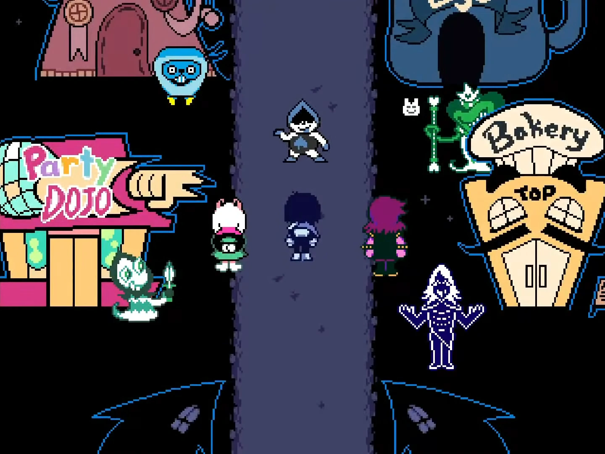
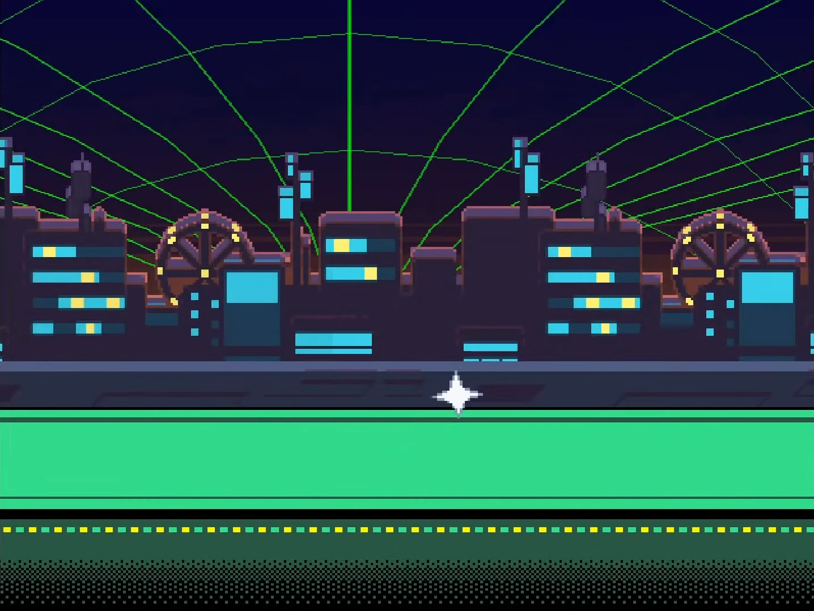
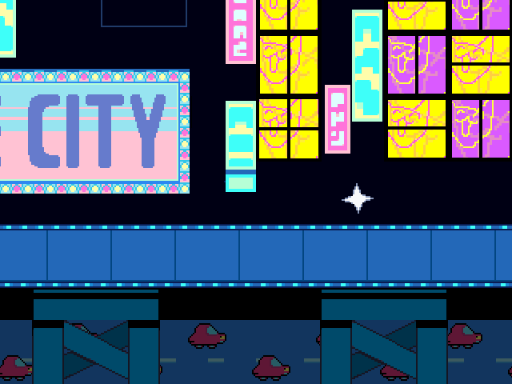
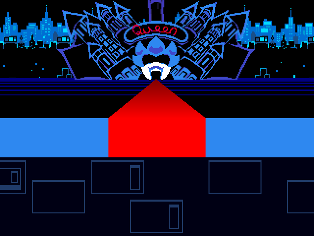
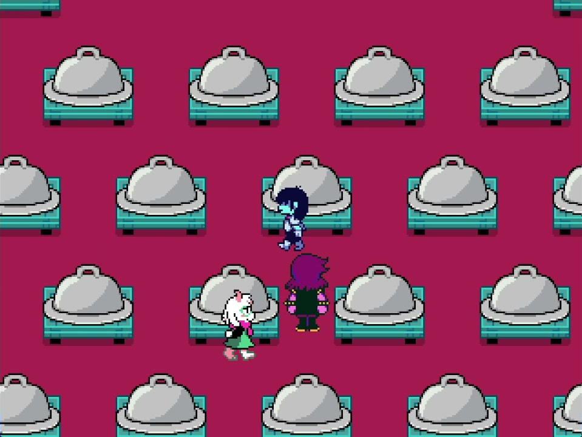
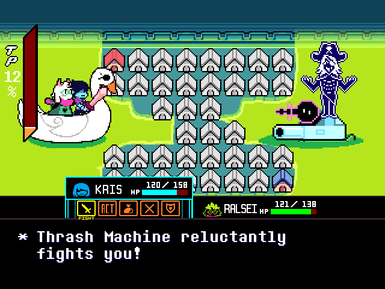
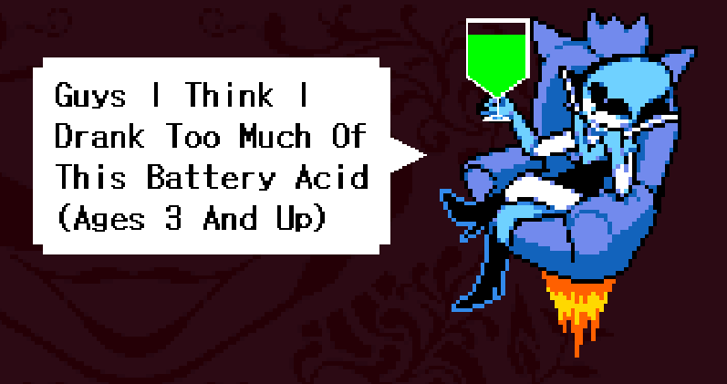
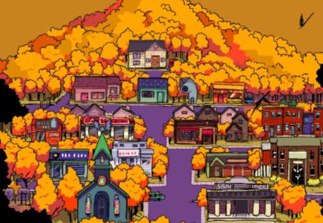

El Capítulo 2 de Deltarune, también llamado A Cyber's World, es la segunda y actualmente última aventura jugable de Kris, Susie y Ralsei. Fue lanzado el 17 de septiembre de 2021.
El Capítulo 2 de Deltarune, también llamado A Cyber's World, es la segunda y actualmente última aventura jugable de Kris, Susie y Ralsei. Fue lanzado el 17 de septiembre de 2021.
Al comenzar el capítulo, cuando la pantalla aún está en negro, Toriel pregunta a Kris si está despierto, asustada, se da cuenta de que hay un cuchillo, y grita hasta que la pantalla se ilumina. Estamos en el cuarto de Kris, Toriel entra con una bandeja vacía en las manos, y le pregunta, furiosa, si de verdad se comió toda la tarta durante la noche. Sabía que fue Kris quien lo hizo porque su cuchillo estaba en la bandeja. Después de darse un manotazo en la cara, empieza a reírse, y se pregunta si tiene que poner candado en el horno otra vez. Sale de la habitación, y Kris se levanta. El ALMA está dentro de él y no en la jaula, en algún momento de la noche Kris debió ponérsela de nuevo. Podemos revisar la habitación otra vez, con algunas nuevas cosas que ver. Al salir de la casa, vamos con Toriel a la escuela sin mediar palabras.
Cuando entramos a nuestro salón, ya todos estaban ahí, Susi incluida. Alphys comienza la clase pidiendo que alguien lea la página 142 del libro. Noelle levanta la mano, pero Berdly la interrumpe, se para sobre su escritorio, dispuesto a "tomar este respiro de humillación". Y comienza a leer. Tan sólo unas pocas líneas fueron suficientes para que Kris se quedara dormido. Al despertar, la clase había terminado, todos excepto Alphys y Kris ya habían salido del aula. Dependiendo de si hablamos o no con ella en el epílogo del capítulo anterior, nos dirá una u otra cosa.
Susie nos estaba esperando fuera del salón, junto a los casilleros. Cuando vamos con ella, primero hablará "tranquila", preguntándonos si no pudimos dormir anoche o algo. De pronto, se acerca a Kris, lo agarra de los hombros y comienza a agitarlo. Dice que ella también tuvo problemas para dormir, aún no podía creer lo que pasó el día anterior, se pregunta en voz alta si todo aquello de verdad pasó, si Lancer, Ralsei, todos siguen ahí. Sabía que Kris se preguntaba lo mismo, así que lo lleva prácticamente a rastras hacia el armario.
El momento de la verdad, Susie se preguntaba, si abrieran la puerta y no hubiera nada dentro... Cuando iba a abrir la puerta, son interrumpidos por Noelle, ella quería invitar a Susie y a Kris a la biblioteca, para que, junto con Berdly, hicieran la investigación para el trabajo en grupo y así. Susie nos pide ayuda, buscando una excusa para decir que no, claro que sin decir directamente que se van a un Mundo Oscuro o algo así. Sea lo que sea que digamos, Noelle entenderá y se irá, no sin antes decirle a Kris que, si llevara a Susie a la biblioteca, significaría mucho para ella. Susie estaba en shock, ¿Por qué Noelle le invitaría a ELLA a hacer la tarea? Entonces, se da cuenta de que mientras hablaba, Noelle estaba muy nerviosa, y sonrojándose, y así. Susie llega a la extraña conclusión de que Noelle pudo haber descubierto sus identidades secretas, con todo esto del Mundo Oscuro. Pero no había tiempo que perder, así que saltan a la puerta del armario, y llegan al Mundo Oscuro. Todo fue real.
Ralsei los recibe amablemente, se sentía realmente contento de que volvieran. Susie se da cuenta entonces de que Lancer no está, NADIE está ahí, sólo Ralsei. Él le pide que espere un rato, que tiene una sorpresa preparada. Y nos pide que volvamos al mundo de la luz, vayamos al salón viejo de la escuela, y traigamos todo lo que haya ahí. No nos queda más opción que salir del Mundo Oscuro otra vez. Vamos al salón sin uso, y Kris recoge todo lo que hay, incluso la alfombra. Lo lleva todo en una enorme bola polvorienta sobre su cabeza, y vuelve al Mundo Oscuro. Todos estos objetos se transforman en pequeñas estrellitas brillantes mientras vamos bajando. Cuando llegamos con Ralsei y Susie otra vez, el escenario se transforma completamente, y todos los personajes antes conocidos regresan.
Lancer nos dice que todo el Mundo Oscuro donde vivía antes desapareció. Susie estaba obviamente incrédula. Ralsei nos explica entonces que, al sellar esa Fuente de la Oscuridad, todo el mundo que mantenía en pie desapareció, convirtiéndolo en los simples objetos del salón sin uso. También nos explica que, de aquí en adelante, cada enemigo que perdonemos será reclutado para este pueblo.
Ralsei nos invita a su castillo, que tiene una sorpresa preparada para nosotros. En el segundo piso vemos cuál era esa sorpresa. Desde que nos fuimos del Mundo Oscuro el día anterior, Ralsei estuvo preparando habitaciones para Kris y para Susie, como un segundo hogar al que pudieran volver sin importar lo que suceda allá afuera. Lancer también tiene su propia habitación. No podemos ir a la habitación de Ralsei porque aún está haciendo remodelaciones y limpieza en el siguiente piso.
Podemos explorar todo el pueblo, interactuar con todos los personajes que hayan. En el centro se encuentra una panadería (Llevada por Lancer y Smith Malius por alguna razón) en la que podremos fusionar algunos objetos, la tienda de Seam, una cafetería en la que trabaja Top Chef (aunque en realidad quisiera llevar la panadería), y un Dojo de Baile, donde podremos desafiar a varios oponentes y recibir recompensas. No es necesario cumplir todo antes de irnos.
Cuando Kris se acerque a la salida del Mundo Oscuro, Susie dirá que no quiere irse aún, y mucho menos hacer el trabajo en grupo. Al enterarse Ralsei de que tenemos tarea pendiente, nos expulsa de su reino hasta que hagamos esa tarea. No nos queda más opción que volver a Hometown y hacer algo. Sin embargo, antes de irnos, Lancer y Rouxls Kaard se meten en nuestro inventario para ayudarnos. De vuelta en la escuela, Kris propone ir a la biblioteca para hacer el proyecto. Susie acepta, aunque con claro desgano. Ella sale primero. Cuando Kris sale de la escuela, sólo puede ir a la biblioteca, debido a que el tráfico se estancó justo delante.
En la biblioteca, Susie se da cuenta de que parece que no hay nadie más. Mira los libros, sin la menor motivación para empezar a hacer la tarea. Decide entonces ir a la sala de computadoras para jugar. Sin embargo, al abrir la puerta, una energía oscura sale de la habitación, igual que con la puerta del Armario. Lo más seguro era que había un Mundo Oscuro ahí dentro. Como había un Mundo Oscuro, había una fuente oscura que sellar. Sin dejarnos más opciones, saltamos a este nuevo Mundo Oscuro.
Mientras bajamos hacia este nuevo mundo, algo sale volando del inventario de Kris. La apariencia del lugar es bastante diferente. Avanzan por este extraño lugar. Escuchan a Noelle pidiendo ayuda. Resulta que ella también cayó a este Mundo Oscuro. Cuando ve a Susie, le dice que huya antes de que sea demasiado tarde. Entonces, Noelle es encerrada en una jaula y llevada lejos. Aparece una mujer riendo con maldad, y se presenta. Es número serial 5U4EX7YY2E9N, o mejor conocida como la Reina.
Nos explica que capturó a Noelle porque la necesita en su plan de dominación mundial, Susie quiere luchar contra la Reina en ese mismo momento, pero ella se va, dejando a Susie y a Kris que se entretengan con un par de Werewires. Después de derrotarlos, llegan otros dos, pero el lugar de pelear contra ellos, son pacificados por Ralsei, quien llegó sabiendo que surgió una nueva fuente oscura de alguna manera. Con el equipo reunido nuevamente, van a rescatar a Noelle y sellar la fuente.
A lo largo del Ciber Campo resolveremos varios puzzles y lucharemos contra varios enemigos. El camino a la Ciudad está bloqueado. En cierta parte del Campo, nos volvemos a encontrar la la Reina. De una forma u otra quiere reclutarnos para su plan de dominación mundial, y propone un pequeño juego, si gana, los Iluminados serán tan humillados que no les quedará más opción que entregarnos. En una enorme máquina arcade hacen un pequeño juego de pelea, que es claramente una referencia a Punch Out. Al ganar, la máquina explota y la Reina se va.
Nos encontraremos varias veces con un equipo que más tarde sabemos que se llaman Sweet Cap'n Cakes, son un grupo de rebeldes que quieren luchar a la Reina y, por un malentendido, piensan que estamos de lado de ella, por lo que tenemos que luchar. Es en esta batalla en la que Susie aprende la Acción S y Ralsei la Acción R. A partir de esto, ambos pueden actuar sin la orden de Kris. Después de derrotar a Sweet Cap'n Cakes, "nos unimos a su equipo" y nos dejan seguir hacia la ciudad.
Entran a lo que parece ser una bodega, y salen de ella montados en carros de Montaña Rusa. La Reina los espera en el camino de esta Montaña Rusa, y tenía una pequeña sorpresa para ellos. Noelle llegó en otro carro de Montaña Rusa, que más bien parecía un trineo. No le había quedado más opción que servir a la Reina, y su misión ahora era tratar de convencer a los Iluminados de unirse a ella. Tras una corta conversación entre Susie y Noelle, la Reina se da cuenta de que no está funcionando, así que trae un arma mejor. Berdly también se había metido en este lío, y quería servir a la Reina por su plan de dominar el mundo y convertirlo en una tierra de inteligentes, o al menos era eso lo que pensaba. Luchamos contra Berdly, tras derrotarlo, la Reina nos cuenta que esta "Montaña" "Rusa" no está "terminada" aún. Lo cual significaba "Dolor". Kris, Ralsei y Susie golpean el final del camino, y son disparados al basurero de la Ciudad.
Tras reponerse de la caída, siguen por el basurero. El camino a la Ciudad se bifurcaba, así que Ralsei nos pide que decidamos con quién ir, con él o con Susie. Sin importar nuestra respuesta, Susie pregunta molesta que por qué Kris es siempre quien toma las decisiones, se lleva a Ralsei por el camino de arriba, es inmediatamente bloqueado por unos conos con cara de perro. Y así, solo, Kris tendrá que ir a la ciudad.
Poco después se encuentra con Noelle, quien había escapado de la Reina, no quería formar parte de su plan. Escucha que la Reina se acerca, así que se esconde. La Reina decide hacer una alianza con Kris, para que pudieran encontrarse con sus respectivos equipos. Escucha que Berdly se acerca, así que se esconde. Berdly también estaba buscando a su equipo, y al ver a Kris sólo, hacen una alianza. Después de que Berdly y la Reina salieran de ahí, Noelle le pide otra alianza a Kris. Ahora Noelle es parte del equipo.
En el primer encuentro con un enemigo, Noelle estará asustada y sin entender lo que está pasando. El enemigo y Kris tendrán que explicarle el funcionamiento de las batallas. Durante toda nuestra travesía por la Ciudad, veremos que Noelle es bastante asustadiza, cuando Actúa su expresión es insegura, y salta de horror cuando un ratón se le acerca. Habrá que luchar contra varios enemigos, cruzar calles en las que los vehículos abundan y resolver puzzles con ratones.
En cierto momento, cuando Noelle escucha que la Reina se acerca, se esconde entre unas cajas. Cuando la Reina ve a Kris ahí, le propone jugar aquel juego del Campo, esta vez sólo para pasar el rato. Sin embargo, antes de que pudieran empezar, una enorme estatua de oro aplasta la máquina arcade. Berdly llega y dice que se trata de él y la Reina en ese mundo ideal que piensa hacer. A la Reina no le gustó realmente, pero finge que sí, y también finge que va detrás suyo cuando él se retira de la sala. La Reina huye corriendo al lado opuesto, donde estaba Noelle. Afortunadamente ella se hizo un disfraz con una de las cajas y pudo pasar desapercibida.
En la Tercera Sala Molesta de Ratón, Noelle corre el peligro de caer al abismo y la única forma de salvarla es hacerla saltar de una plataforma a otra. Todo esto mientras Berdly se encuentra mirando y monologueando el cómo tiene que estar ahí para Noelle, que ella no podría superar desafíos como ese por sí misma, que la entiende muy bien y sabe que es una chica que necesita de alguien que la ame y la proteja. Al resolver el puzzle, Berdly estará incrédulo, no puede creer que un tonto como Kris haya resuelto algo así. Se va frustrado, y Noelle regresa con Kris. A partir de ese momento, ya ha perdido el miedo a los ratones. Poco después, volvemos a encontrarnos con él, al ver que Noelle está con Kris, piensa que fue obligada y se enfrenta a nosotros para ayudarla. Tras derrotarlo, se encontrará muy cansado, finge que lo está de esconder su verdadero poder, dice que derrotar a Kris en ese momento sería muy fácil así que se fue, supuestamente para darle más tiempo a convertirse en un rival digno.
Más adelante nos volvemos a encontrar con la Reina, Noelle se pone su disfraz. La Reina estaba apurada buscando a Noelle, así que manda a Kris a subirse a su auto, conducir y buscarla. Noelle también va. Durante el camino, Noelle pregunta por qué la Reina estaba tan preocupada por ella, y le responde que porque Noelle es, de hecho, muy fuerte.
Tras cruzar un puzzle más, llegamos a una sala con un montón de puestos de lanzar la pelota. Escuchan que la Reina se acerca, así que Noelle se esconde detrás de uno de los puestos y se pone su disfraz. La Reina toma una pelota y la arroja, justo al puesto donde Noelle se escondió. Ella le da su respectivo premio, la Reina se lo da a Kris, y se va. Entonces, Susie y Ralsei llegan, Susie nos presume que aprendió un hechizo de curación y Ralsei aprendió sarcasmo. Ralsei se fija que Kris tiene un regalo, y pregunta si es para alguien. Dependiendo de a quién le demos el regalo, se producirán distintos eventos cómicos. De todas maneras, descubren que Noelle estaba con Kris, ella recalca que está en una alianza con Kris así que la dejan unirse al equipo. Los cuatro juntos siguen por la ciudad, miran los fuegos artificiales, resuelven otro puzzle más, y llegan a la entrada de la Mansión de la Reina. Y ella les estaba esperando ahí. Amenaza a Noelle con que si no vuelve con ella, haría a Berdly sumergirse en un lago de ácido de batería. A Noelle no le queda más opción que entregarse.
Berdly llega en ese momento, así que la Reina pasa al plan B, encierra a Noelle en una jaula y se la lleva de ahí. Berdly se da cuenta entonces de que fue engañado por la Reina, se siente traicionado y mal consigo mismo. Kris, Susie y Berdly son encerrados y llevados a sus prisiones/habitaciones. Ralsei se quedó ahí, y la Reina se echó a reír, pues sólo tenía 4 jaulas.
Kris se encuentra atrapado en una habitación con varios objetos que parecen totalmente aleatorios. A través de una pantalla, la Reina nos dice que están encerrados en habitaciones decoradas con las preferencias de sus dueños (y para ello se basó en sus búsquedas de internet). Había un sistema de comunicación entre habitaciones, y Susie nos grita a través de este sistema que hay que buscar alguna forma de salir para rescatar a Noelle. Kris tenía un As bajo la manga, literalmente, pues Lancer aún estaba en su inventario. Lo libera y Lancer hace colapsar el sistema, liberando a Kris, a Susie y a Berdly de sus jaulas. Al salir de nuestras habitaciones, Susie se alegra de ver a su amigo de nuevo, pero la alegría dura poco, Lancer comienza a toser, se pone pálido, dice sentir mucho frío. Susie, preocupada, trata de curarlo, pero no era suficiente. Se apresuran para buscar a Ralsei, tal vez él podría hacer algo. Berdly también se apunta.
Después del pasillo de las habitaciones, hay que resolver tres puzzles de alinear las sombras. Berdly quería hacerse el listo y resolver los puzzles, pero es Kris quien termina haciéndolos, el último con la ayuda de Susie. Berdly se siente furioso, se supone que él es el N°1 de la clase y ellos los tontos. Susie le obliga a comerse la derrota, y Berdly nos cuenta la verdad: Que él realmente no es tan listo como todos piensan, siempre ha sido ayudado por Noelle, pero ella no recibía el crédito que merecía. Es por eso que quería formar un nuevo mundo para los dos, donde siempre pudieran ser N°1 y N°2, pero estuvo tan cegado por esa idea que dejó que la Reina lo manipulase, y ahora, Noelle sufriría por su culpa.
Susie y Lancer animan a Berdly, él está sorprendido. Decide cambiar de rumbo y seguir el camino de la ignorancia, aunque eso no fuera precisamente lo que ellos querían decir. Además, la imagen que Berdly tenía de Susie cambió completamente, de ser la tonta y mala de clase a una gamer agradable y enérgica. De todas maneras, avanzan hacia el comedor, al final de éste se encuentran con Ralsei, quien conversaba con los otros sirvientes de la Reina. Nos explica que, al no tener más jaulas, la Reina decidió que Ralsei sería su nuevo sirviente.
Susie le pide que ayude a Lancer, al ver cómo se encontraba, Ralsei dice que no lo puede ayudar, y Lancer termina convertido en estatua. Resulta que, así como un Oscuro puede vivir en el Mundo donde existía su fuente, no es compatible con otros Mundos Oscuros. La única forma de ayudar a Lancer era llevarlo al Mundo del armario de la escuela, como la fuente de ese mundo es de oscuridad pura, cualquier oscuro puede vivir ahí. Berdly entonces dice que tiene un plan:
Había un atajo hacia el tercer piso, él y Susie tomarían ese atajo para ir a rescatar a Noelle, mientras Kris y Ralsei buscan distraer a la Reina. Reunirse en el techo de la mansión y todos juntos, podrían derrotar a la Reina.
Berdly se adelanta, Kris, Susie y Ralsei se unen de nuevo y comienzan el recorrido. Dos salas después, los pasillos estaban llenos de cuadros de la Reina que escupen fuego. Tras un montón de puzzles y batallas, llegamos hacia la entrada de aquel atajo. Berdly y Susie entran por él y Ralsei y Kris se van por otro camino.
Llegamos a un río de ácido de batería, un bote en forma de cisne llega y, montados en él, cruzan por este largo túnel. Conversan un rato con la Reina a través de las pantallas, cruzan pequeñas islas repletas de casitas en miniatura. También hay un punto en el que deben bajar a una isla para resolver un puzzle y poder continuar. Casi al final de este recorrido, se encuentran con Rouxls Kaard, resulta que había salido del bolsillo de Kris al inicio de la aventura. Quería enfrentarse a nosotros para volverse la Mano Izquierda de la Reina. A la batalla se añade la mecánica de tomar las casas de la pequeña isla que hay entre ambos barcos. Tras vencerlo, Rouxls decide revelar su verdadero poder. Parecía que iba a transformarse o algo, pero se convierte en estatua de los pies al cuello. Igual que Lancer, no era compatible con este mundo. El camino se abre, y dejan a Rouxls en esa isla. Poco después podemos tomarnos una foto, y el viaje finaliza.
Al salir, Ralsei pregunta a Kris si se está preguntando cómo estará Susie en ese momento. Si le decimos que sí, le invitará a cerrar los ojos, e imaginar lo que ella podría estar haciendo...
Noelle se encontraba en su amplia y oscura habitación, mirando hacia la extraña luna de este mundo, que parecía una pelota de béisbol. De repente, un par de Werewires llegan, pero antes de que pudieran siquiera tocar a Noelle, sus cables son cortados. Susie llegó al rescate. Convence a Noelle de que todo esto es solamente un sueño, y salen de esa habitación, subidas en una Rueda de la Fortuna decorada con corazones. Mientras esperaban llegar al punto acordado, tienen una larga conversación. Aquí descubrimos que a Noelle, de hecho, le gustan las cosas aterradoras, y la razón por la que se interesa en Susie es porque ella es el tipo agradable de miedo, que no teme romper las reglas y hacer locuras.
Algún rato después, bajan de la rueda. Noelle decía que le encantaría tener sueños como este más a menudo, cuando Susie estaba a punto de decirle algo, Berdly llega, interrumpiéndolas. El plan ahora era que Susie volviera con su equipo, y Berdly se llevara a Noelle a un lugar donde la Reina no los pudiera encontrar. Entonces Susie da un salto, y se va de ahí. Con Berdly y Noelle a solas, habían algunos asuntos que querían resolver.
Berdly pide perdón, Noelle pensaba que se disculpaba por todo lo que él había hecho para esto de un mundo mejor, y ella estaba contenta de que se diera cuenta de que era una idea tonta. Aunque Berdly también quería disculparse por eso, no era precisamente lo que le quería decir en ese momento. Se disculpa por tener que rechazarla, pensaba que ella le ayudó todo este tiempo porque tenía un interés en él (cosa que claramente no era verdad). Dijo que, aunque valoraba mucho su amistad, él acababa de encontrar a alguien más, y le pide a Noelle que no esté celosa. ¿De quién? De Susie. Al escuchar esto, Noelle lo agarra del cuello de su traje, y comienza agitarlo, preguntando infinitamente ¿QUÉ? con una cara preocupante.
De vuelta con Kris y Ralsei, Susie llega desde muy arriba, y los tres juntos, continúan. Se enfrentan a un Werewerewire, cruzan un puzzle más, y llegan finalmente con la Reina. La Reina los sorprende con que había encontrado a Berdly y a Noelle, mientras tenía a Noelle atrapada más adelante, a Berdly lo estaba controlando con un cable como a los Werewires. Durante la batalla, tendremos que liberar a Berdly. Una vez liberado, se preparará para luchar a nuestro lado. Como la Reina no tenía un sistema para pelear contra 4, los distrae y escapa. Berdly ya no tenía energías para seguir, así que se queda.
Poco más adelante, encontramos a Noelle amarrada a lo que parece ser una mano gigante. La liberan, pero son sorprendidos otra vez por la Reina, quien se metió en un enorme robot, tan grande que no había rival para ella. De un simple manotazo mandó a volar a Kris, a Susie y a Ralsei. Son oportunamente atrapados por Berdly, quien junto con todos los demás, habían creado un enorme robot que estaría a la altura de la Giga Reina. Y así, se produce el combate final, el cual combina el estilo de juego de Punch Out con el estilo de batalla de Deltarune.
Tras derrotarla, nos atrapa y va con Noelle otra vez. Le pide que use su poder, y haga un mundo que la haga feliz. Se le agota la batería y se apaga, Ralsei pensó que ya era buen momento de ir a sellar la fuente. Noelle estaba triste porque, a pesar de todo, disfrutó mucho de la extraña aventura que tuvo. Susie y Berdly están de acuerdo con ella, de que realmente no hay razón para dejarlo todo atrás, Berdly saca su arma y reúne energía para crear una nueva fuente de oscuridad en la que pudieran tener un gran y brillante futuro. Pero Ralsei lo detiene, y nos cuenta una Oscura Verdad...
Cuando la luz sea consumida por las sombras, cuando las fuentes llenen el cielo, cuando todo caiga en el caos, los Titanes surgirán de las fuentes y sumirán la tierra en la devastación. Los Oscuros que sobrevivan, se convertirán lentamente, uno a uno, en estatuas. Dejando a los Iluminados solos, perdidos eternamente en una noche sin fin. ¿Era esa su idea de paraíso?
Todos quedaron sorprendidos por esta confesión, Reina incluida (había recargado su batería mientras Ralsei hablaba). Nos dice que realmente no lo sabía, que su plan se basaba solamente en lo que supo de las acciones del Caballero. Berdly y la Reina se disculpan por haber causado tanto problema, la Reina libera a Kris, Susie y Ralsei y se va de su enorme traje robótico. Regresa en su forma base, prepara un programa de despedida, pero cuando Ralsei le cuenta que Kris le puede llevar a ella y a todos al pueblo oscuro, se cancela toda operación. Después de una corta charla con Noelle (en la que Susie insiste que NO tiene cola), se van a sellar la fuente.
Noelle y Berdly se despiertan, Susie y Kris estaban de pie al frente, en la sala de computadoras de la biblioteca. Tanto Noelle como Berdly pensaron que todo aquello fue un sueño. Se sorprenden al ver que Susie y Kris estaban ahí. Sin embargo, Berdly no se complica por el hecho de que Noelle los haya invitado a estudiar. La alarma de Berdly suena y se va apurado de ahí.
Noelle lo acompaña, pero se queda un momento más en la puerta, mirando con curiosidad a Susie. Ella se da cuenta y la espanta. Después de eso, Susie se queja de que Noelle se haya comportado de esa forma con alguien que acaba de salvar el mundo. Susie se sorprende entonces porque ¡de verdad acaban de salvar el mundo! ¡son héroes reales! ¡y nadie lo sabe! Pero piensa que es mejor que sea así, pues la gente se volvería loca si supiera que el mundo está en peligro. Después de esto, Susie sale de la biblioteca. Antes de irse, Kris recoge todo lo que había ahí.
Al salir de la biblioteca, Susie decide acompañarnos a casa, por lo que podemos explorar todo Hometown con ella.
Podremos ir a Castle Town y toda la gente reclutada del mundo cibernético se unirá a nuestra pequeña ciudad, la Reina incluida. Lancer y Rouxls regresan sanos y salvos. Se añaden nuevos desafíos al Dojo de Baile, Sweet Cap'n Cakes estarán en su local y podrán reproducir música, como una fonoteca. Y muchas otras cosas.
Algunos lugares de Hometown antes inaccesibles ahora están abiertos, y otros lugares ahora están cerrados. Podemos ir a la tienda de Sans o a visitar a Rudy y Noelle en el hospital. La florería de Asgore está cerrada, y podemos entrar al departamento de policía, cerca de ahí estará Alphys, quien tuvo un accidente con su bicicleta. Toda la familia de Catti estará "animándola" en el QC's Diner.
Al llegar a nuestra casa, Susie se despide de nosotros, pero antes de que pueda irse, Toriel abre la puerta. Invita a Susie a quedarse y preparar tarta, ella acepta, conversan un rato en la sala, Susie va a lavarse las manos y comienza a preparar la tarta con Toriel. También invitan a Kris a hacer la tarta con ellas, así que vamos al baño para lavarnos las manos.
Sin embargo, al abrir la llave del lavabo, Kris deja el agua correr, comienza a agitarse, arranca su ALMA y la guarda debajo del lavabo. Camina lenta y pesadamente hacia el otro lado del baño, abre la cortina, y salta por la ventana. Dejando el agua correr.
Podemos escuchar que Toriel y Susie siguen preparando la tarta, estaban cerca de terminar, pero el azúcar se había quedado en el auto, así Toriel que sale de la casa. Es en este momento que Kris regresa por la misma ventana, vuelve a absorber su alma, termina de lavarse las manos y cierra la llave. Al salir del baño, Susie nos dice que hemos tardado un montón. Toriel regresa, y dice que terminen la tarta luego. Invita a Susie a quedarse a dormir esa noche, y va al piso superior de la casa. Susie y Kris se van a la sala, se acomodan en el sofá y encienden la televisión. Durante la conversación, Susie menciona sobre que se acerca el festival, evento en el que Hometown se convierte en una feria. Cuando finalmente encuentran algo interesante que ver, ambos se quedan dormidos rápidamente.
Algunas horas después, cuando ya estaba cayendo la noche, vemos a Toriel en pijama, llamando por teléfono a la policía. Dice que vio a alguien merodeando alrededor de la casa, y que cuando fue a ver su auto, notó que las llantas habían sido cortadas. Se siente aliviada cuando le dicen que van a llegar pronto. Cuelga el teléfono y va a la sala, se sienta en su sillón y empieza a leer. Unas horas después, ella también estaba dormida y la televisión apagada.
De repente, Kris se levanta. Se arranca el ALMA otra vez. Abre la puerta de la casa. Se acerca a Susie, no sabemos si le hizo algo. Enciende la televisión, la pantalla sólo muestra estática. En el centro de la sala, Kris levanta su cuchillo, y lo clava en la alfombra. Una ráfaga de luz sale de ahí, y la habitación comienza a llenarse de un humo muy oscuro. Kris se echa al pie del sofá, y levanta su alma. Cuando la pantalla estaba totalmente en negro, la pantalla de la televisión logra pasar por encima de la oscuridad, mostrando una enorme sonrisa.
El capítulo termina ahí, dejándonos la intriga de si aquello que hizo Kris fue crear una nueva Fuente Oscura, o de qué se trataba esa sonrisa en la pantalla.
Puedes jugar Deltarune Capítulo 2 en PC/Mac, Nintendo Switch y PlayStation 4.